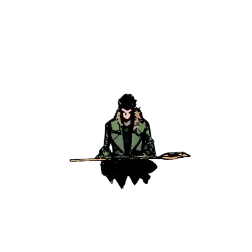
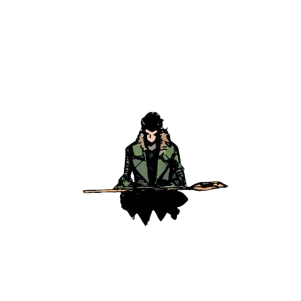

André Vinícius Candido Cruz
Sobre Mim
Sou um desenvolvedor web apaixonado por criar soluções inovadoras e eficientes. Tenho experiência em HTML, CSS, JavaScript e Python.
Estou sempre em busca de novos desafios e oportunidades para aprender e crescer na área de tecnologia.
Além disso, sou um entusiasta de jogos e tecnologia, sempre buscando maneiras de integrar essas paixões em meu trabalho.
Estou sempre aberto a novas oportunidades e colaborações. Se você está interessado em trabalhar comigo ou tem alguma dúvida, não hesite em entrar em contato!
Projetos
© 2025 André Vinícius Candido Cruz. Todos os direitos reservados.
 
